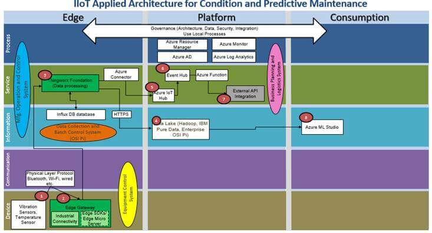

Figure 9 Technical Architecture Condition and Predictive Maintenance using PTC and Azure Platform
Steps:
Sensors/devices will be deployed on the manufacturing equipment.
Sensors/Devices will be connected through physical layer connectivity protocols like Bluetooth, Wi-Fi, wired etc. to IoT Edge gateway.
Edge Gateway has Thingworx edge component installed on. These components include Industrial connectivity tool (Kepware), Thingworx and Edge SDKs(Optional). Thingworx package will be used for things modelling, setting up the rules for anomaly detection, high speed data database (Influx DB) etc. Edge SDKs is optional, it is required when you want to communicate with device using IoT Edge Gateway. Edge will be capable to aggregate and process high speed and low speed data through Thingworx running on it.
The raw as well processed data will be ingested into Enterprise data lake (Enterprise pi)
Further data from Enterprise Data Lake will be consumed by Azure ML Studio for prediction modeling.
The processed data will be sent to Azure IoT Hub from Thingworx in case any anomaly detected
IoT Hub will send the event to event-hub and from there Azure Integration, service will send notification to the targeted stakeholders.